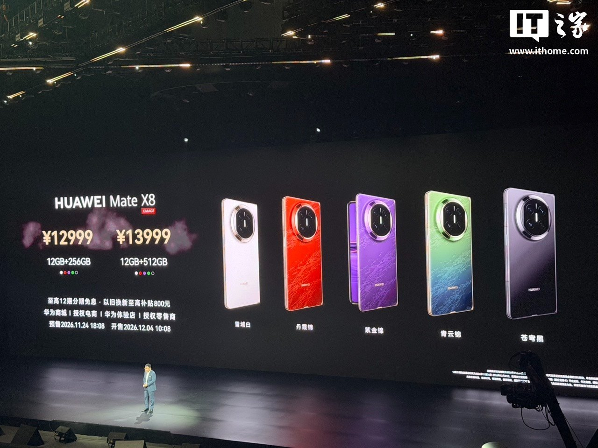

新闻 · 2026-11-26 08:00
IT早报 1125：最高 883 元用一天鸿蒙奖 1 元；黄仁勋承认多段婚外情并向英伟达董事会致歉；12999 元起华为 Mate X8 折叠屏发布；曝豆包灰测购物一级入口...
IT之家“IT早报”11月25日汇总多条资讯：华为推出“鸿蒙一亿感恩有礼”活动，设备使用一天得100积分，积分最高价值883元；黄仁勋向英伟达董事会披露除此前报道外仍有其他婚外情并致歉，董事会讨论后恢复其全部职务；华为Mate X8大折叠旗舰发布，定价12,999元起；神舟二十四号瞄准当日8:18发射，将实现中国空间站首次中外航天员联合飞行。

来源与核验
单一信源报道，未交叉核实